GRAPHY-NEXT v0.6.0 / 操作ガイド
ROI のグループ化とコピー、患者を並べて比べる全患者タイル、複数シリーズの連結、そして元に戻せない操作（自動削除・受信時の匿名化）の設定を、画面つきで紹介します。小さな変更は最後のページに一覧しました。
ROI のグループ化まとめて表示・ロック・選択・合算
ROI のコピーと貼り付け複数をまとめて、位置関係を保ったまま
全患者タイル患者を並べて比べる。取り違えを防ぐ表示
複数シリーズの連結位置の順に 1 本で表示
自動削除条件・試算・有効化の確認
受信時の匿名化元に戻せない設定を、確かめてから有効に
AI アシスタントと、そのほかの変更
01 / 2D Viewer ＞ ROI ツール ＞ ROI マネージャ
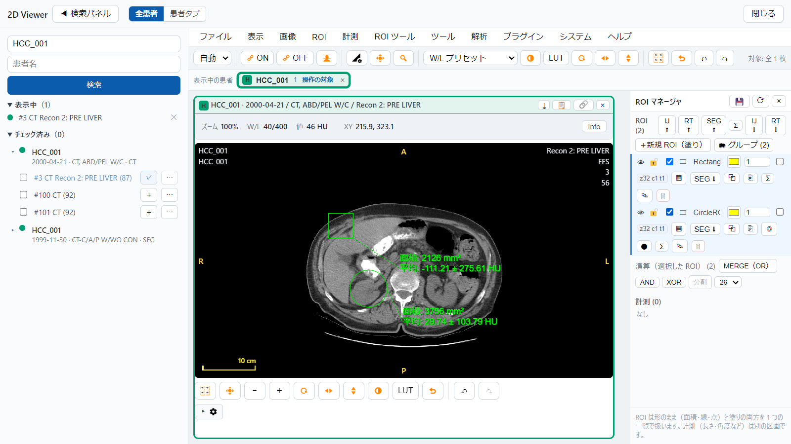
ROI マネージャで、まとめたい ROI の行頭にチェックを入れます（2 つ以上）
「🗂 グループ」を押します。同じ患者の ROI だけをまとめられます
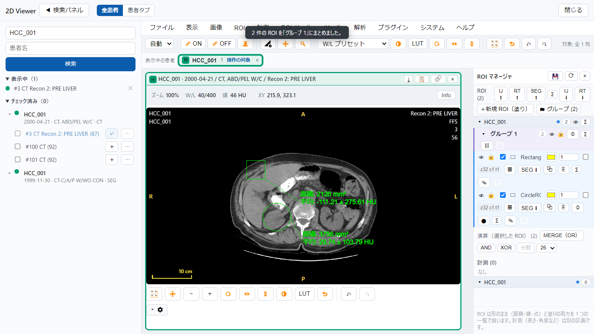
グループの名前は書き換えられます
見出しの右のボタンで、まとめて操作します
👁 表示・非表示 🔒 ロック（メンバーの鍵が一緒に変わります）
◎ メンバーを全部選ぶ Σ 合計面積と、全画素をまとめた平均 ± SD
グループは保存され、開き直しても残ります。⛓ で解除、🗑 でグループごと削除できます（ロック中の ROI は残ります）。
02 / 2D Viewer ＞ ROI ツール ＞ ROI をコピー・ROI を貼り付け
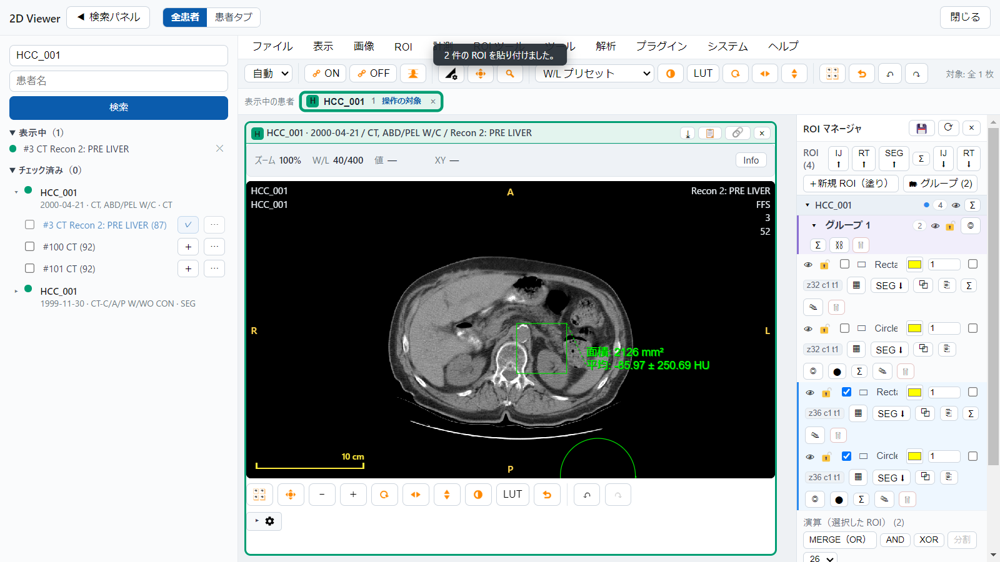
ROI を選びます。Ctrl（Mac は ⌘）＋クリックで複数選べます。グループの ◎ でも選べます。ROI ツール ＞ ROI をコピー（Ctrl+C）
貼り付け先のスライスやタイルを開いて、ROI を貼り付け（Ctrl+V）。複数のときも、面内の相対位置とスライス間の枚数差を保ちます
ROI は別の患者のタイルへも貼り付けられます（貼り付け先の患者の、新しい ROI として保存されます）。
⚠ 選択が複数の患者にまたがるとき、またコピーで複数のタイル（シリーズ）にまたがるときは、コピーできません。理由が表示されます。
03 / 2D Viewer ＞ タイルの見せ方「全患者」
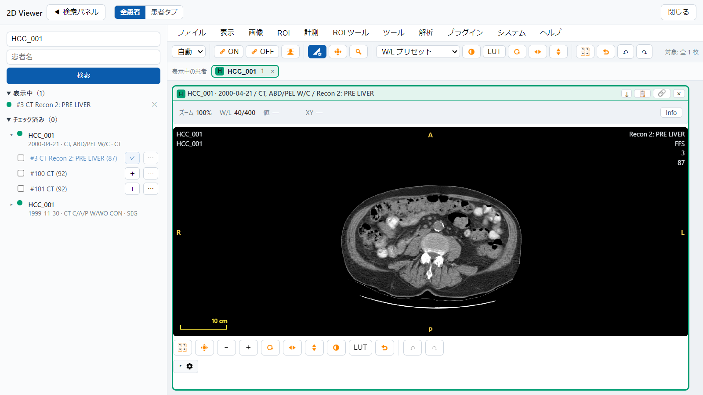
「検索パネル」の開閉で、画像の領域を広げられます
表示中の一覧に、開いているシリーズが出ます。✕ でそのタイルを閉じます
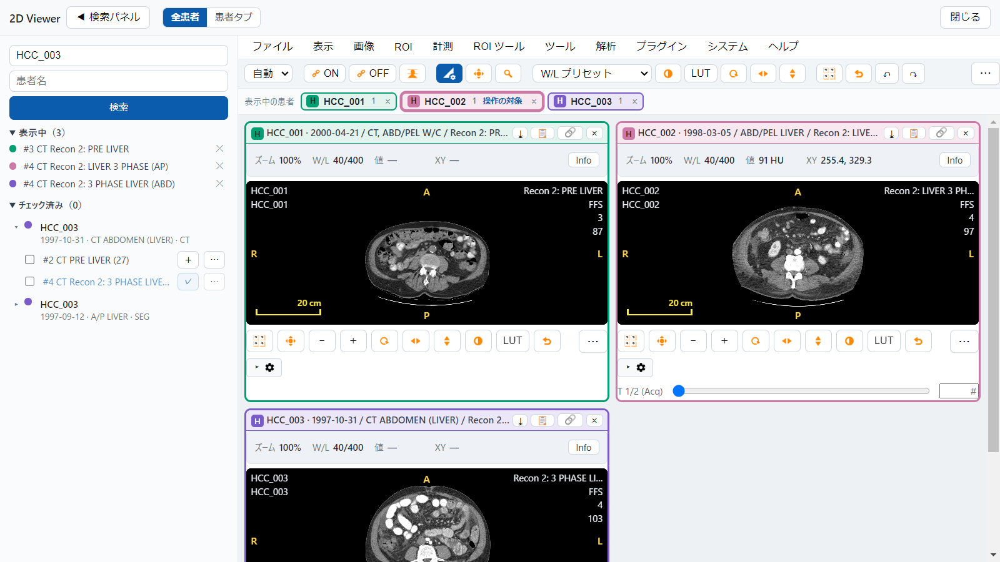
「全患者」では、別の患者を開いてもタブは増えず、同じ領域に並びます（「患者タブ」で従来の表示に戻せます）
凡例に表示中の患者と、いま操作が効く「操作の対象」が出ます。押すとその患者のタイルが点滅します
タイルのヘッダには、患者名・ID・検査日が常に出ます
操作は全患者に一斉には効きません。Fusion は別の患者どうしではできず、スクロール同期は同じ患者のタイルの間だけ連動します。
04 / 2D Viewer ＞ 左パネル ＞ 連結して開く
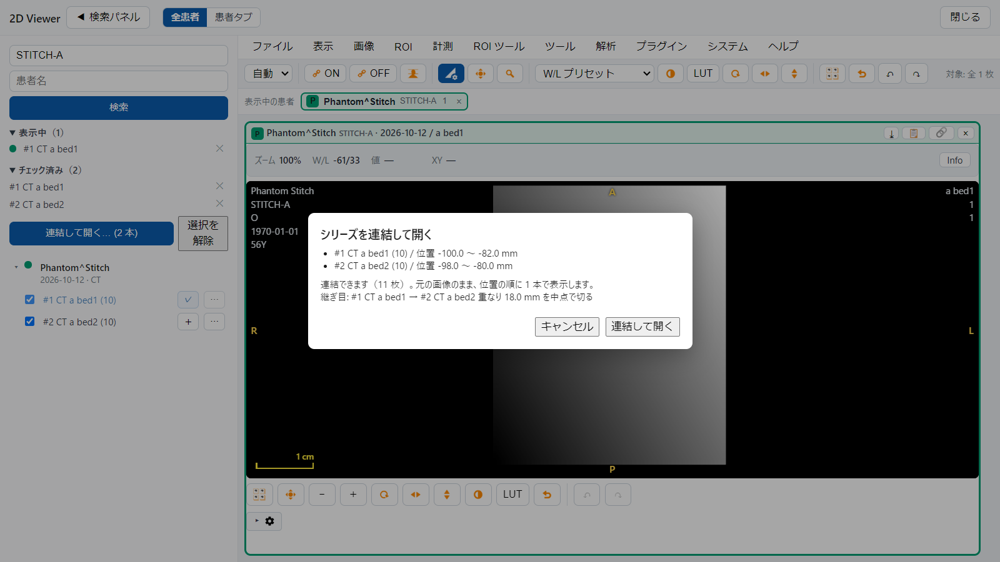
左パネルで連結するシリーズにチェック（2 本以上）を入れ、「連結して開く」を押します
連結できるかを確かめた結果と、枚数が出ます
継ぎ目の重なり・隙間が出ます。重なりは中点で切り、隙間は埋めません
問題がなければ「連結して開く」
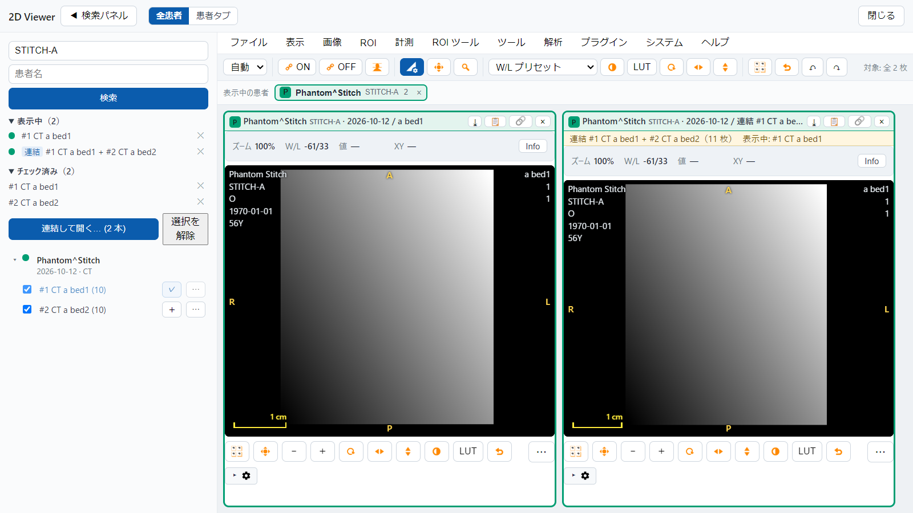
連結したタイルにはバナーが出て、元の画像のまま 1 本のスタックとして見られます
連結できるのは、同じ患者・同じ座標系・同じ向き・同じモダリティで、全スライスに位置のあるシリーズです。満たさないときは、理由をすべて表示します。
05 / 環境設定 ＞ 自動削除
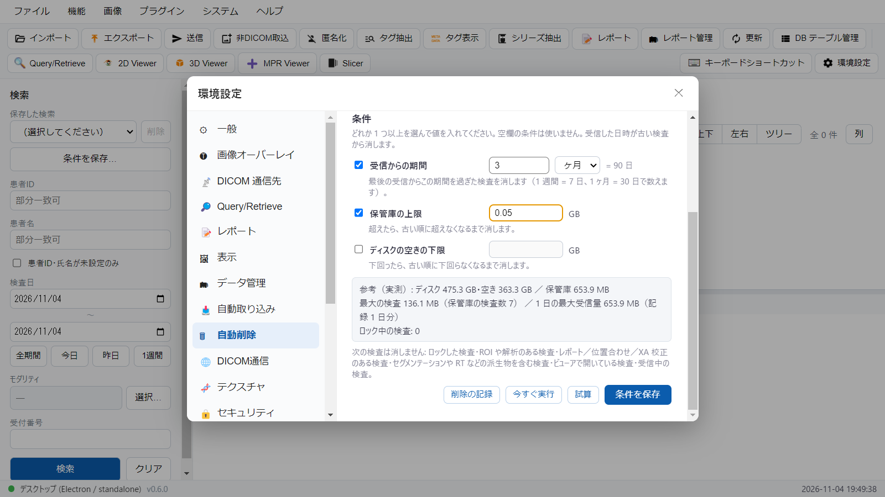
受信からの期間の値を入れます
単位は日・週間・ヶ月から選べます
日数に換算した値が出ます（1 週間 = 7 日、1 ヶ月 = 30 日）
「条件を保存」。保存しても、状態は「オフ」のままです。保管庫の上限・ディスクの空きの下限も条件にできます
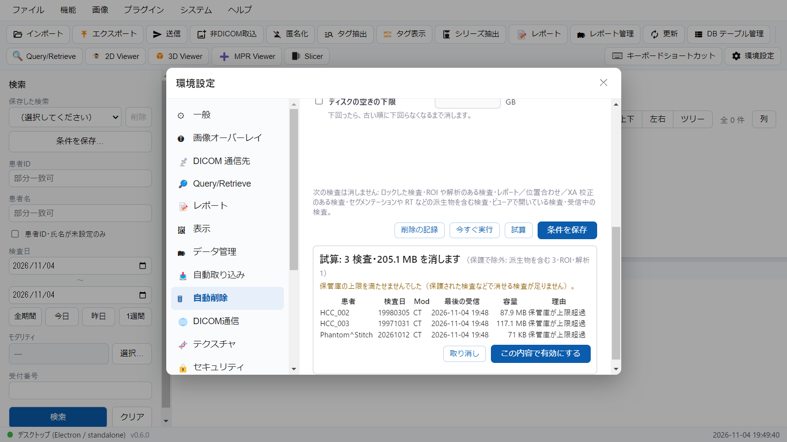
「試算」は何も消しません。今の条件で消える検査を見せます
患者・検査日・容量・消える理由の表で確かめます
納得できたら「この内容で有効にする」へ
⚠ ロックした検査、ROI・解析・レポートなどのある検査、開いている検査は消しません（試算に除外の件数が出ます）。
05 / 環境設定 ＞ 自動削除（つづき）
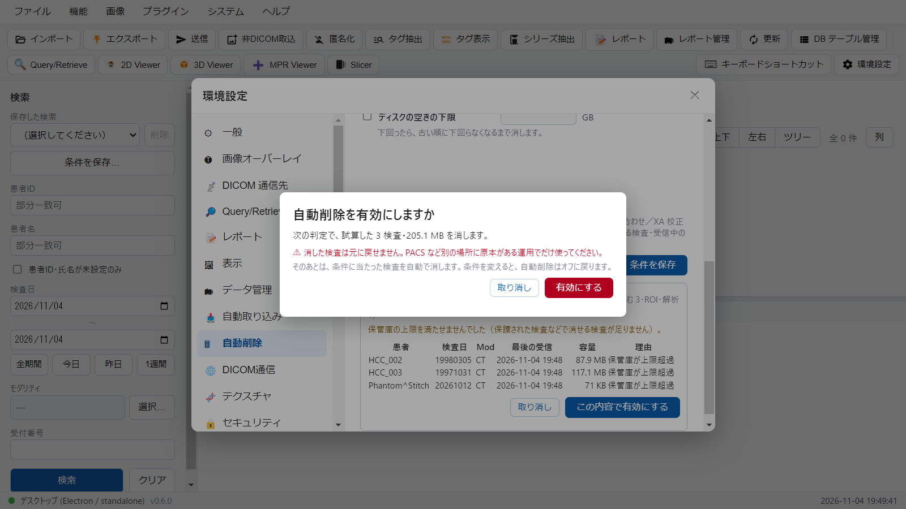
「この内容で有効にする」を押すと、確認が出ます。やめるときはキャンセルで戻れます
消した検査は元に戻せません。PACS など別の場所に原本がある運用でだけ使ってください。
削除の実行は「削除の記録」に残ります。ロックした検査は消えません。
06 / 環境設定 ＞ DICOM 通信先 ＞ 受信時の匿名化
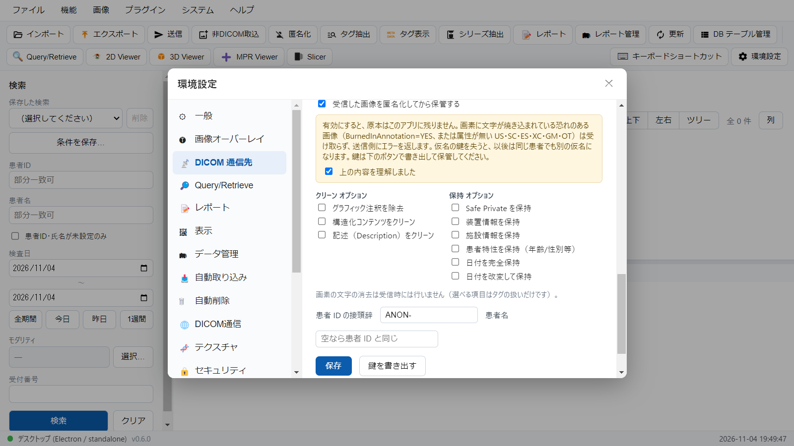
「受信した画像を匿名化してから保管する」を入れると、原本はこのアプリに残りません
注意の内容を読み、「理解しました」にチェックを入れます
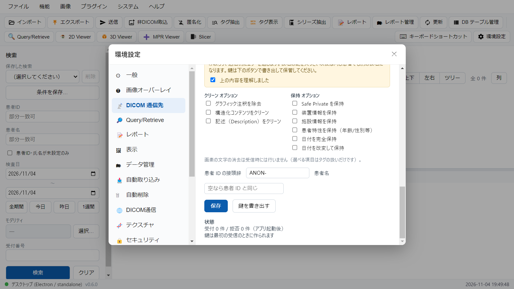
患者 ID の接頭辞などを決めます
保存すると、再起動なしで次の受信から効きます
仮名の鍵を書き出して保管します。鍵を失うと、同じ患者でも別の仮名になります
⚠ 画素に文字が焼き込まれている恐れのある画像は受け取らず、送信側にエラーを返します。
07 / AI アシスタントと、そのほかの変更
AI アシスタント（表示中の画像の添付、ROI の作成と計測値の読み取り、プラグインの AI ツール）は構築中です。この版では機能が増えていますが、動作の確認が終わっていないため、使い方は載せません。
この一覧は、更新の内容から拾った主なものです。すべての変更は、リリースノートを参照してください。